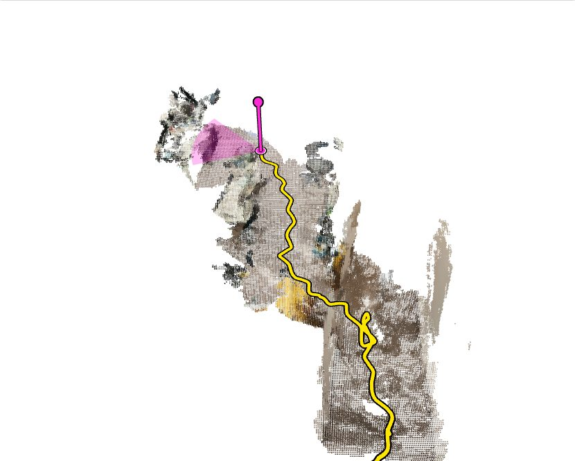
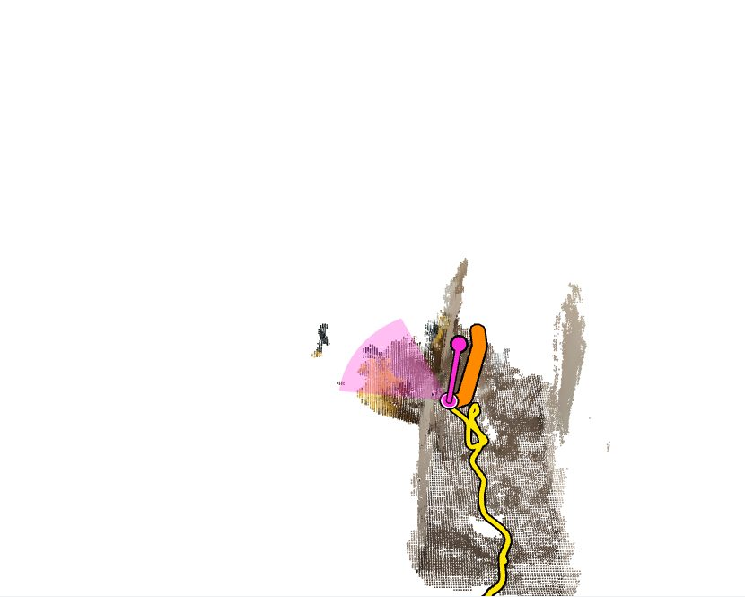
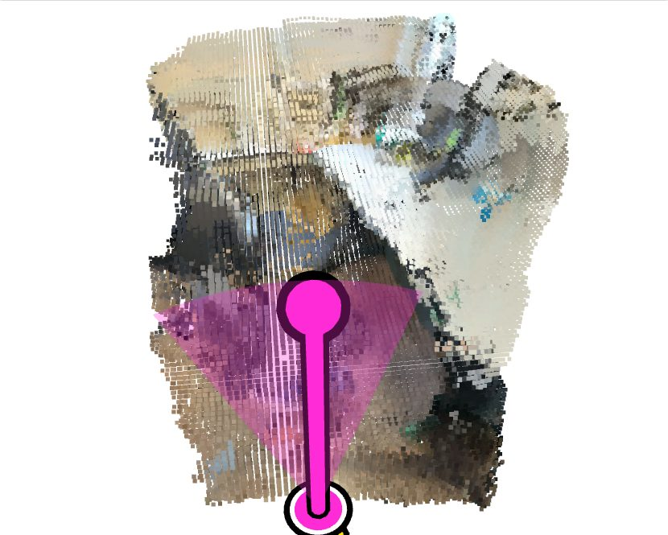

A phone scans a room while someone walks through it, and a computer turns the stream into a 3D model in real time. That model is what the navigation cues for simulated prosthetic vision are made from. Each replay below is a real recording you can play, pause, scrub through time and turn around in 3D.

Watch a whole room appear in 3D at real speed, with a clock.
Open the replay →
See the line the computer plans and sends to the phone while the room is still being scanned.
Open the replay →
The model follows the arm and the chair as they move, next to the phone's own camera view.
Open the replay →